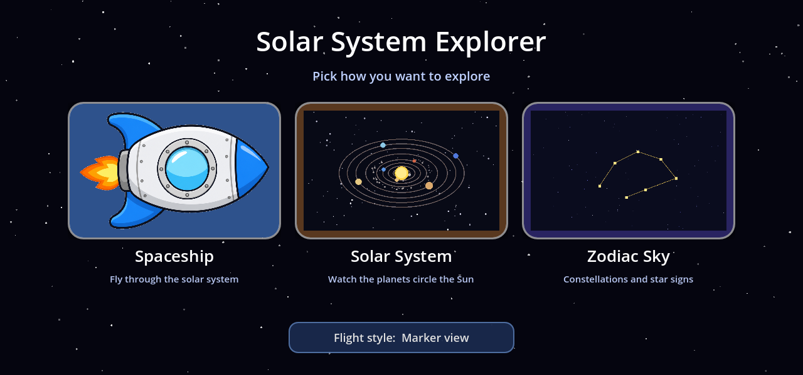
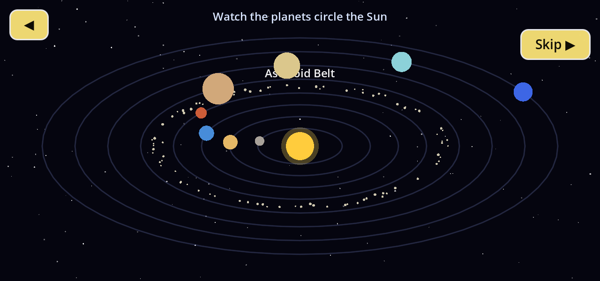
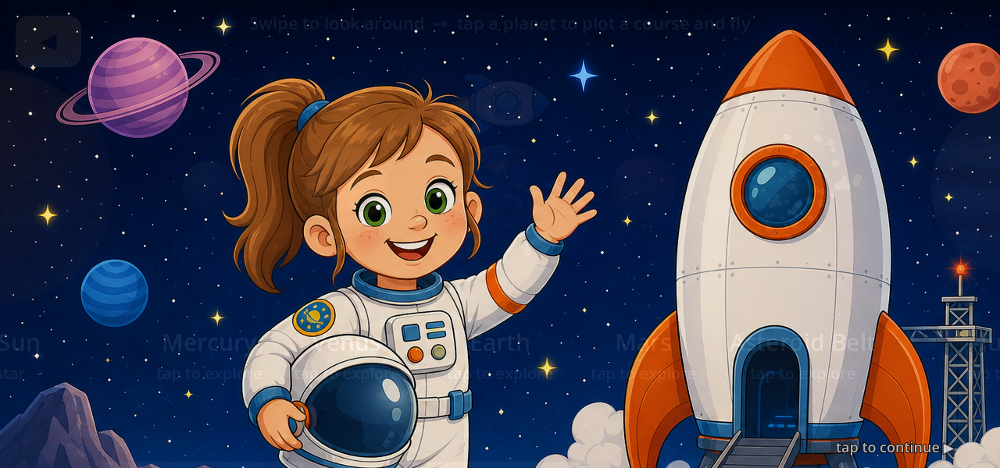
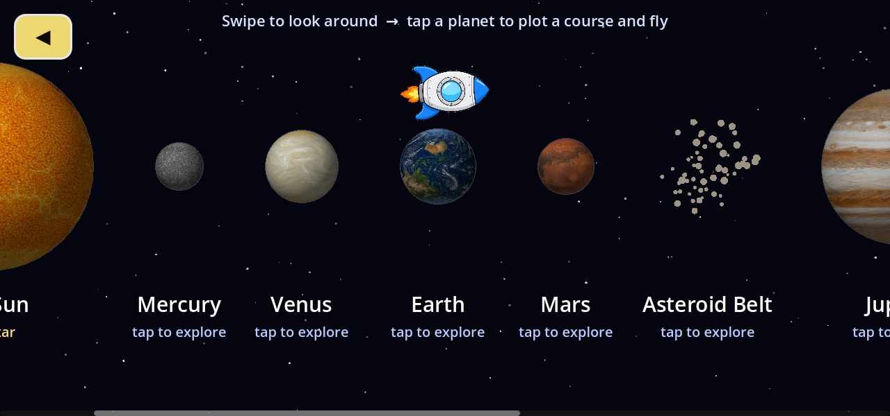
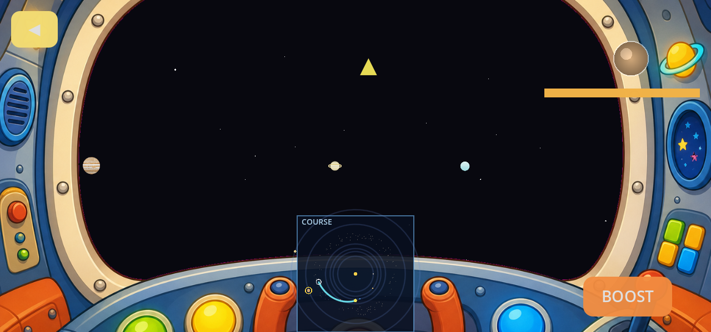
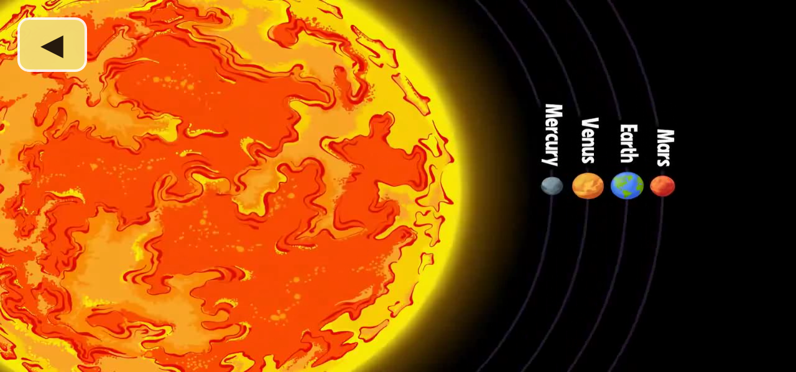

Sun
Our star up close — the hop parks at a safe standoff; you can’t land on a star.
Star Learner · Game
A calm tour of the Sun and its planets for a young child: choose Spaceship for a 3D flight sim, or Solar System for a narrated orrery — then plot a course, burn past the asteroid belt, and park in orbit with short documentary clips along the way.
Launch opens a star-field hub with two large choices. Spaceship starts the 3D flight simulation: briefing, destination strip, course plot, cockpit fly, then orbit. Solar System opens a narrated top-down orrery — the Sun, eight planets on flattened ellipses, and the asteroid belt as a scattered ring between Mars and Jupiter. When the tour ends (or you skip), you’re back at the hub; flight is a separate path.
On the Spaceship path, a cartoon astronaut girl gives a spoken “you are an astronaut…” briefing (tap to skip). Next comes a horizontal piloting strip of rotating planet skins — swipe, tap a world, watch the ship glide over — then a top-down board charts the intercept course. Cockpit flight uses burn, coast, and brake toward the target; sizes and orbits are tuned to read for a six-year-old, not to scale.
Crossing the asteroid belt fires an “ASTEROID FIELD!” callout with narration. Tapping Asteroid Belt resolves to the nearest of three named rocks — Ceres, Vesta, or Psyche — also tappable as labelled dots on the plot board. Arrival parks you in orbit; from there, optional Learn more plays a short documentary clip for that body (Sun through Pluto, plus the major asteroids). Asteroid visits can chain into a belt explainer; you can always skip and keep cruising.






From orbit, Learn more plays a short clip for that body. Three samples from the in-game catalog:
Our star up close — the hop parks at a safe standoff; you can’t land on a star.
Home world facts after parking in Earth orbit.
Ringed giant — one of the Learn more clips from Sun through Pluto.